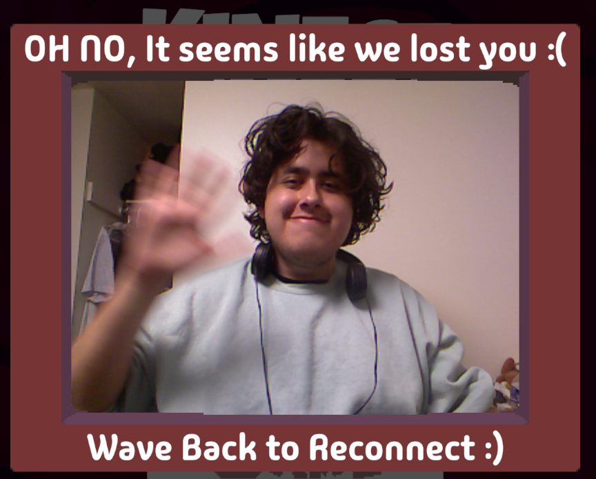
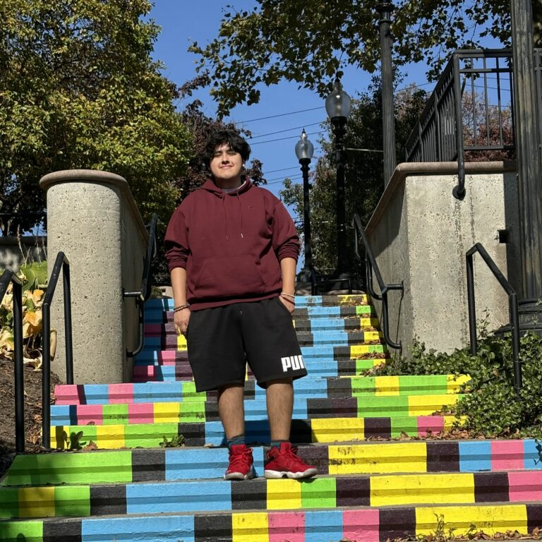

<!DOCTYPE html>
<html>
    <head>
        <link rel="stylesheet" href="main.css">
        <link rel="stylesheet" href="header.css">
        <link rel="stylesheet" href="portfolio.css">
        <link rel="preconnect" href="https://fonts.googleapis.com">
        <link rel="preconnect" href="https://fonts.gstatic.com" crossorigin>
        <link href="https://fonts.googleapis.com/css2?family=Belanosima:wght@400;600;700&family=Concert+One&family=Kantumruy+Pro:ital,wght@0,100..700;1,100..700&family=Potta+One&family=Racing+Sans+One&display=swap" rel="stylesheet">
    </head>
</html>
<body>
    <div id="top">
    <div>
        
    </div>
    <div class = "name">
        <h1>
            Junior Siguencia
        </h1>
        <h2>
            Welcome to my site!
        </h2>
    </div>
    
    <ul id="navbar">
        <li class="navitem">
            <div class = "navcontainer">   
                <a href="index.html"> 
                    <span>Home</span> 
                    <div class = "navimage">   
                         
                        
                    </div>  
                </a>
            </div>
            
        </li>
        <li class="navitem">
            
            <div class = "navcontainer">   
                <a href="index.html"> 
                    <span>Gallery</span>  
                    <div class = "navimage">   
                         
                        
                    </div>  
                </a>
            </div>
        </li>
        <li class="navitem">
            
            <div class = "navcontainer">   
                <a href="about-me.html"> 
                    <span> About Me</span> 
                    <div class = "navimage">   
                         
                        
                    </div>  
                </div>
            </a>
        </li>
    </ul>
</div>
<div class="blank-space"></div>
    <div class = "page-title">
        <h3> About Me!</h3>
        <p> Game Developer, Programmer and Artist</p>
    </div>
    <div class="photo-section">
        <div class="photo-display">
            <div class="column side">
                
            </div>
            <div class="column middle">
                
            </div>
            <div class="column side">
                
            </div>
        </div>
        <div class ="photo-row">
            <div class="photo-standby">
                
            </div>
            <div class ="photo-standby">
                
            </div>
            <div class ="photo-standby">
                
            </div>

        </div>
    </div>
    <div class ="blank-space"></div>
    
    <div class ="page-body">
        <div class ="overview">
            <div class = "section-header">
                <p> Hello!</p>
            </div>
            <p style="font-weight: bold;">
                My name is Junior Siguencia, a first-generation Ecuadorian-American with an interest in all things videogame related.
                <br><br>
                I am a Wesleyan graduate with a B.A. in Computer Science and Integrated Design, Engineerings & Arts
            </p>

        </div>
        <div class ="blank-space"></div>
        <div class="design">
            <p>
                Since I was younger, I have always taken an interest into how things are designed and developed - particularly videogames. As I continue to learn and develop my programming and artistic capabilities, I hope to share the same joy of videogames I got from them! 

                <br><br>
                Since I have graduated, I continue to work in developing videogame graphics - such as shaders and animation - in the Unity Engine. I am also working on Rosa, a mobile application for college search, as the lead Art / UX developer.
                <br><br>

                I am actively searching for employment opportunities and open to any of them. I can work anywhere in the United States without restriction (will relocate if necessary!)
                
                
            </p>
        </div>


    </div>
    <script src="portfolioViewer.js"></script>
</body>